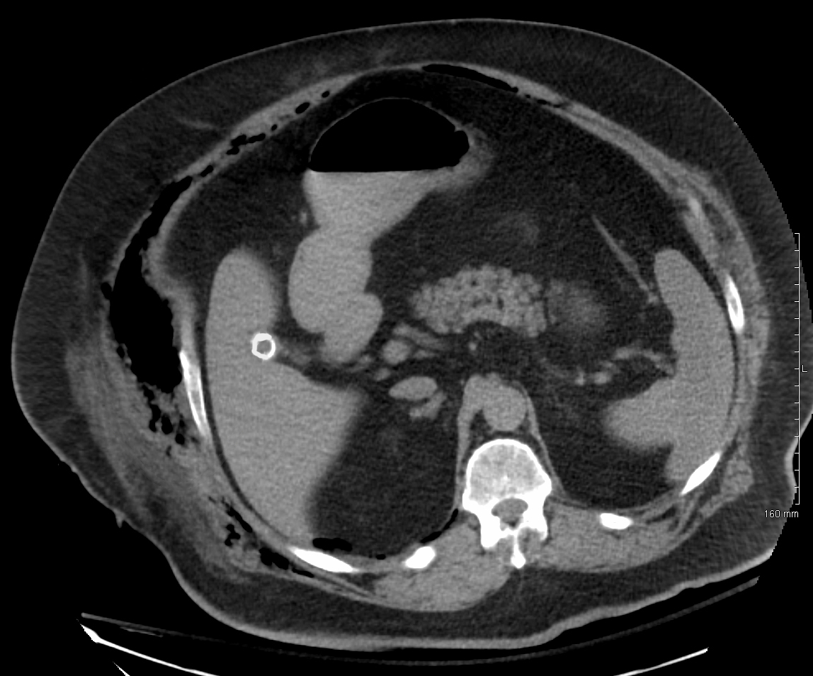

Ficha del catálogo
Fascitis necrosante
- Sistema
- Óseo
- Modalidad
- TC
- Región
- Extremidades y tronco
- Dificultad
- Avanzado
La fascitis necrosante es una infección rápidamente progresiva que se extiende por la fascia profunda y produce necrosis de los tejidos con escasa afectación inicial de la piel. Es una urgencia quirúrgica en la que cada hora de retraso aumenta la mortalidad. Aparece sobre todo en diabéticos, inmunodeprimidos y tras heridas o cirugías, aunque a veces no hay puerta de entrada evidente. La imagen ayuda a delimitar la extensión, pero nunca debe retrasar la exploración quirúrgica cuando la sospecha clínica es alta.
Técnica
Tomografía con contraste intravenoso que abarque todo el segmento afectado y las regiones vecinas, con ventana de partes blandas y también ósea para detectar gas.
Qué observar
- Gas disecando los planos fasciales profundos, hallazgo muy específico
- Engrosamiento y realce irregular de la fascia profunda
- Líquido a lo largo de los planos intermusculares
- Ausencia de realce de músculos y fascias por necrosis establecida
- Extensión proximal que suele superar los límites de la afectación cutánea
- Colecciones organizadas que puedan requerir drenaje complementario
Hallazgos
Engrosamiento fascial con líquido y gas en los planos profundos, realce irregular o ausente de las estructuras afectadas y edema difuso del tejido celular subcutáneo.
Perlas
El gas en los planos profundos es muy específico pero solo aparece en una parte de los casos, de modo que su ausencia no descarta nada. La regla práctica es que una sospecha clínica firme obliga a la exploración quirúrgica aunque la imagen sea poco llamativa.
Diagnóstico diferencial
- Celulitis grave
- Afecta al tejido celular subcutáneo sin líquido ni gas en la fascia profunda.
- Piomiositis
- Colección dentro del vientre muscular con fascias respetadas.
- Enfisema subcutáneo postraumático o postquirúrgico
- Antecedente claro, gas sin realce fascial anómalo ni signos inflamatorios.
Simuladores
- Gas introducido por punción o drenaje reciente
- Edema fascial por insuficiencia cardiaca o hipoproteinemia
- Cambios postoperatorios recientes con líquido en los planos
Por modalidad
- TC
- Método más rápido y disponible en el paciente inestable
- RM
- Mayor sensibilidad para el compromiso fascial pero más lenta
- US
- Puede mostrar líquido fascial y gas a pie de cama
Protocolo
Tomografía con contraste en fase venosa del segmento afectado, con reconstrucciones multiplanares. El estudio no debe demorar la valoración quirúrgica urgente.
Clasificación
Se separa por criterio microbiológico en formas polimicrobianas y formas por un único germen, con implicaciones en el tratamiento antibiótico.
Errores frecuentes
- Descartar el diagnóstico por la ausencia de gas
- Limitar el campo de estudio y subestimar la extensión proximal
- Retrasar la cirugía a la espera de un estudio de imagen adicional

fascitis necrosante infeccion gas fascia profunda urgencia quirurgica partes blandas contraste